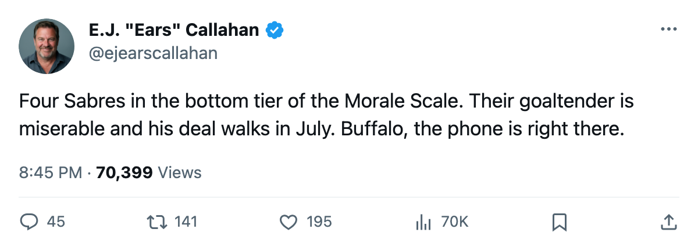
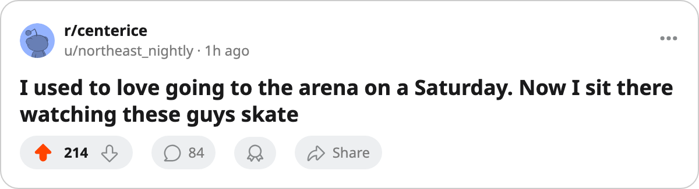

Sources: Morale Problems Brewing in Buffalo. The Sabres Have 4 of the 15 Unhappiest Men in Hockey. 🔥🔥
Martin Biron carries an 88 overall grade on an expiring deal. His Morale Scale number is 72. The streak is 7. Nobody has called.
 E.J. "Ears" CallahanInsider · The Hot Stove
E.J. "Ears" CallahanInsider · The Hot Stove

Buffalo morale crisis and the Biron shelf

Four  Buffalo Sabres players sit among the 15 unhappiest men in the league. Three of them are walking in July. The Sabres have lost 7 straight and have 19 days to decide what to do about it.
Buffalo Sabres players sit among the 15 unhappiest men in the league. Three of them are walking in July. The Sabres have lost 7 straight and have 19 days to decide what to do about it.
Buffalo's club morale averages 86.8, second-lowest in the league. Only  Columbus Blue Jackets sits lower, at 85.7. The Bureau's Morale Scale has
Columbus Blue Jackets sits lower, at 85.7. The Bureau's Morale Scale has  Martin Biron88 at 72,
Martin Biron88 at 72,  Mike Leclerc74 at 72,
Mike Leclerc74 at 72,  Andrew Brunette74 at 72, and
Andrew Brunette74 at 72, and  Eric Boulton66 at 74. Buffalo has played 62 games, sits at 62 points, and trails Boston's 72 in the Northeast standings.
Eric Boulton66 at 74. Buffalo has played 62 games, sits at 62 points, and trails Boston's 72 in the Northeast standings.
The goaltender nobody has called about
Biron carries an 88 overall grade and has started 52 games. His deal expires this summer. He's taking 57.1 minutes a night into a crease on a club that has allowed 231 goals. A team that believes it can win in April gets an 88-grade starter for $2.10M on an expiring salary. Buffalo gets picks or a prospect back before free agency closes on July 28, when Biron walks at zero cost.
League sources around the division say no call has come in. Buffalo hasn't placed one either. Two weeks of silence from both sides of the phone.
The rest of the room
Leclerc plays 9.3 minutes a night. Boulton carries a 66 overall grade on $0.40M. Neither is a trade candidate; their morale numbers describe the locker room but don't move the math.
Brunette sits at 72 morale but carries one more year on his deal beyond this season, so he isn't a rental. The unhappiness there points at the coaching or the culture, not the contract.
 Chris Drury86 is the name that complicates the shelf. He carries an 84 overall grade, 77 points in 62 games, and $2.00M in salary. His deal is expiring. His morale reads 87, a number that belongs to a man who hasn't decided yet whether to be angry about this club or leave it. Buffalo's payroll sits at $44.16M against $60.04M in revenue. The Sabres are $19.78M profitable. The money to make a phone call is sitting in the account.
Chris Drury86 is the name that complicates the shelf. He carries an 84 overall grade, 77 points in 62 games, and $2.00M in salary. His deal is expiring. His morale reads 87, a number that belongs to a man who hasn't decided yet whether to be angry about this club or leave it. Buffalo's payroll sits at $44.16M against $60.04M in revenue. The Sabres are $19.78M profitable. The money to make a phone call is sitting in the account.
19 days and a phone that isn't ringing
The Sabres are $0.71M per point. They've built cheap and efficient and now they're losing 7 in a row with 19 days until the deadline. A club with money and a losing streak has three options: sell, buy into something, or do nothing. The Morale Scale says the room won't wait for nothing.

